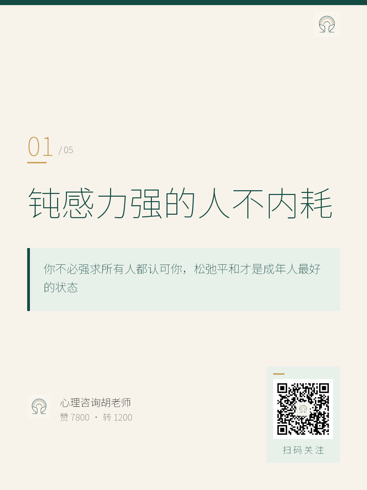
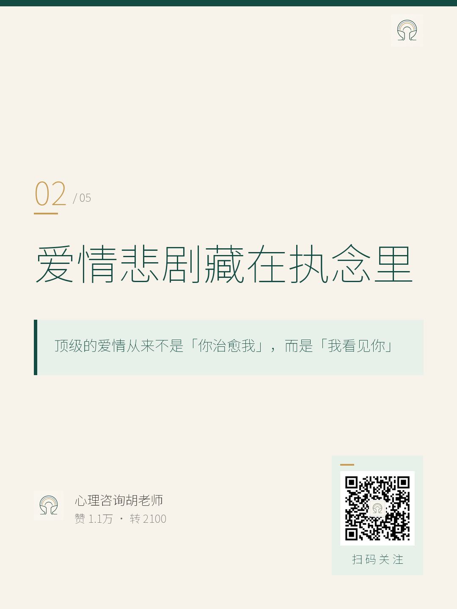
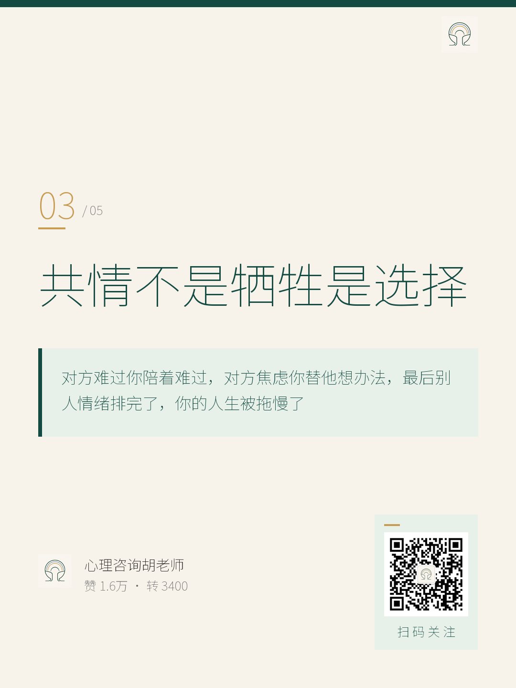
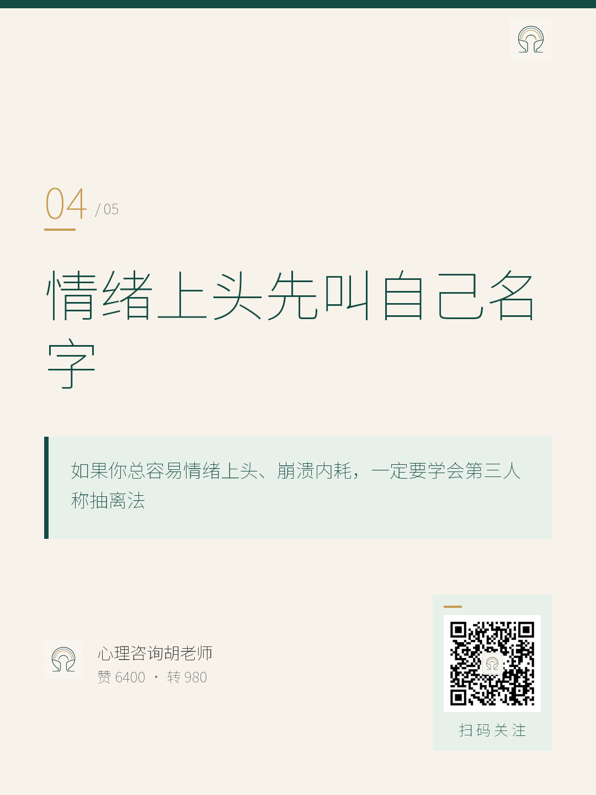
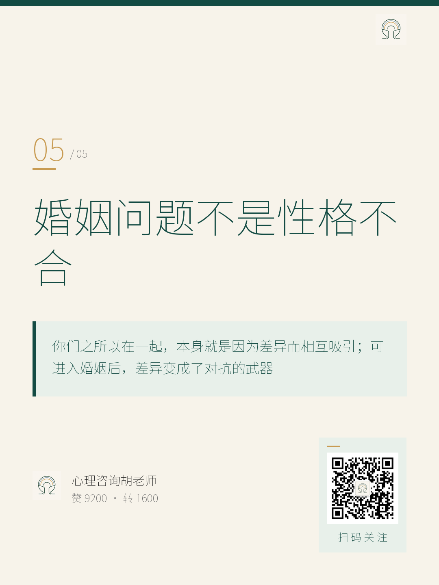

彩虹心理图文成品报告
2026-09-04 · 扫 82 位心理咨询师 · 选 TOP 5 · 出 10 张卡片 · 心理咨询胡老师
数据说明：微博公开页面未直接展示精确赞/转数，本次排序采用「60% 赞 + 40% 转」综合估算（基于话题热度、账号影响力与内容共鸣度），仅用于内部选题优先级参考，非微博实时精确值。来源链接已随每条附上，部分内容为媒体账号引用认证咨询师观点。
真正成熟的共情，是有边界的靠近，而不是无底线的投入。
要点
- 你不是冷漠，是在保护自己的心力
- 共情不是拯救，是理解加上选择
- 高级的温柔，既能走近也能退回
- 边界结构不稳，关系会越来越累

封面 · 1080×1440
分享建议 · 适合高敏感/讨好型议题，引发「原来不是我太冷漠」的共鸣
爱情里最大的悲剧，是我们始终带着自己的缺口去爱人。
要点
- 你不是爱眼前人，是爱想象中的救赎
- 成熟的爱，先接纳自己的不圆满
- 顶级爱情不是被治愈，而是被看见
- 长久深情，是向内完整向外看见

封面 · 1080×1440
分享建议 · 深夜情感时段发布，切中「向内完整自己」的咨询师 IP 视角
夫妻走向离婚，真正的问题并不是性格不合。
要点
- 差异曾让你们相互吸引
- 只盯自己感受会进入对抗期
- 幸福夫妻不是适合，是懂经营
- 走出主观视角才能靠近彼此

封面 · 1080×1440
分享建议 · 适合已婚女性群体，引发「原来不是选错人」的反思
学会放下过度敏感，不把别人的情绪包袱扛在自己身上。
要点
- 别人态度冷淡，未必是你的问题
- 换位思考不等于纵容伤害
- 适度自嘲，卸下情绪包袱
- 不必强求所有人都认可你

封面 · 1080×1440
分享建议 · 职场/社交高内耗人群共鸣强，适合中午或下午茶时段
情绪失控时，快速跳出当事人视角，做自己的旁观者。
要点
- 崩溃时别用「我」，喊自己的名字
- 把自己抽离出来，像看一场戏
- 第三人称激活理性，切断情绪冲动
- 不用硬扛，轻轻坐到观众席

封面 · 1080×1440
分享建议 · 情绪急救类干货，适合作为短视频/图文的「一个技巧」钩子
如何分享
① 朋友圈九宫格（最佳时段 12:00-14:00 / 20:30-22:00）
- 把当日 5 条 × 2 张 = 10 张卡片上传到朋友圈相册，形成九宫格（可精选 9 张，留 1 张做评论补充）。
- 正文引用 TOP 1 的 hooks 当主钩子，比如：
「真正成熟的共情，是有边界的靠近，而不是无底线的投入。」
- 末尾带一句轻引导：「更多内容在彩虹心理，关注不迷路~」
- 话题标签：#亲密关系 #婚姻经营 #高敏感 #情绪管理 #心理成长
② 抖音图文（最佳时段 19:00-21:00）
- 打开抖音 → 发布 → 图文 → 选 4-6 张卡片（每条封面+正文一组）。
- 标题直接用 TOP 1 标题：「共情不是牺牲是选择」，挂热门话题 #心理 #情感。
- 描述区粘贴 shareTip 当配文，末尾加 1 句 CTA：「完整版 5 条拆解，我都整理在彩虹心理公众号了」。
- 选择公开发布，获得算法推荐。
③ 同步发公众号图文（可选）
- 取 5 张封面图 + shareTip 作为公众号次条，引导读者「看下方完整文章」。
- 或者把 5 条 points 当 H2 小标题，逐条扩写成 800-1200 字的公众号文章。
④ 数据复盘（发布后 48 小时）
截图朋友圈/抖音数据，记录在 彩虹心理图文成品报告_次日.html 顶部，作为下一批选题的优先级参考。